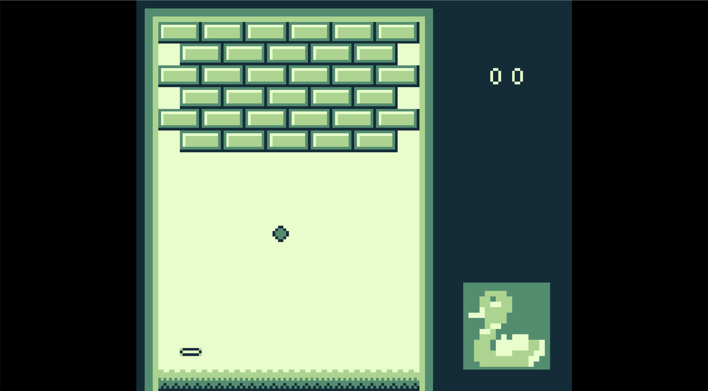
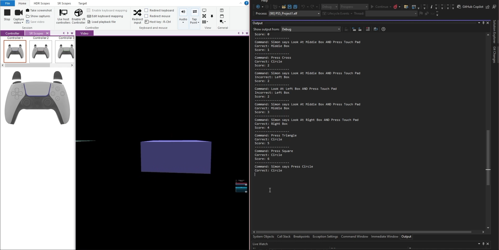
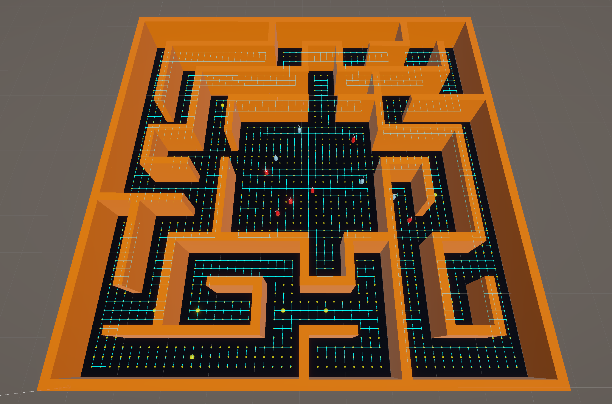

Toy Offensive Yunit
Developed AI systems with complex behaviour, and worked within a team to create a game for a client at Rebellion.

Adaptive AI (Final Year Project)
Dissertation and developed an artefact to test AI behaviour within procedural environments.

Solar System Simulation
Mathematical simulation using vectors, matrices, quaternions.

Game Boy Assembly Project
Worked at a low level using assembly to directly interact with hardware features of the Nintendo Game Boy.

PlayStation Dev Kit Project
Console game development using PlayStation development hardware.

AI Battle Simulation
Developed reusable gameplay systems to create a battle between two teams of AI within a procedurally generated environment